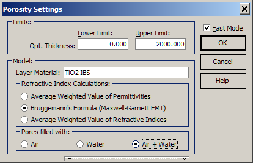

Porosity
The Porosity Characterization option is a specialized type of characterization procedure. In this mode, the refractive index of the layer is determined as a mixture of a material selected from the Layer Material database and one of the following: Air, Water, Air + Water.
This approach allows for a precise analysis of the layer’s properties by considering the effects of porosity and the materials involved in the mixture.

The Mixture Characterization option requires the specification of limits for layer thickness.
A material should be selected in the middle part of this dialog window. This material must be preliminarily created in the Layer Material database. The Refractive Index Calculations determines how the refractive index of the porous material (i.e., selected Layer Material with pores filled with: Air, Water or Air + Water) is computed.
This option can be used in either conventional or Fast mode, similar to the Characterization option.
Additionally, the Measurement Correction option can be applied if larger values of systematic errors in measurement data are expected.